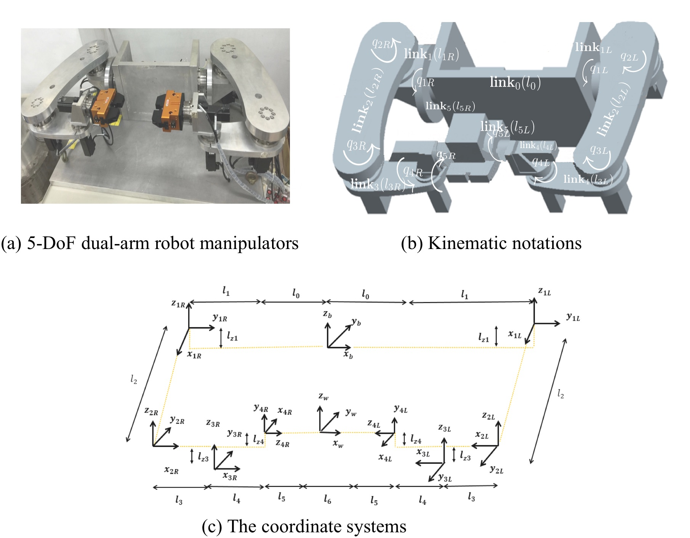
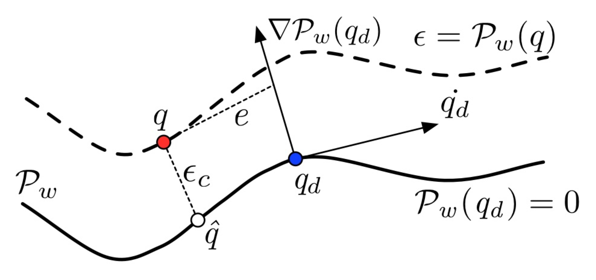

Holonomic Constraints and Contouring Control
Motivation
In manufacturing systems such as automation and machining, fast response and high-precision motion control are indispensable. Contouring control has long been recognized as a powerful framework for coordinating multi-axis motion systems.
However, most conventional contouring control approaches are designed for
unconstrained systems. In practice, mechanisms such as dual-arm robotic manipulators
inherently involve holonomic constraints — algebraic relationships
that restrict allowable motion. For example, during cooperative machining, the
end-effectors of two arms must maintain a precise relative position while following a
desired tool path. Hence, joint coordinates must satisfy
holonomic constraint equations
φ(q) = 0.
The Dual-Arm Robotic Manipulator
|  |
|
Dynamics with Holonomic Constraints
|
The contouring-control problem seeks a control input \(u\) such that the system output \(q\) follows the desired path \(\mathcal{P}_w\). The goal is to design a control law as if the system were unconstrained, by using the Equivalent Errors (EQ) method.
Coordinate-Transformation Framework
|  |
A crucial challenge in contour-following control is minimizing the contour error — the shortest distance between the actual position \( q(t) \) and the desired path \( \mathcal{P}_w(q_d) \): \[ \epsilon_c(t) = \mathsf{dist}(q, \mathcal{P}_w(q_d)) = \| q - q_d \|_\infty, \quad \forall q_d \in \mathcal{P}_w \] The EQ framework introduces a coordinate transformation that expresses the system dynamics in terms of equivalent contour errors, converting the contouring task into a stabilization problem: \[ \begin{bmatrix} \epsilon \\ e \end{bmatrix} = \begin{bmatrix} \mathcal{P}_w(q) \\ \dot{q}_d^T (q - q_d) \end{bmatrix} \] |
Compared to conventional time-based tracking, the EQ-based framework emphasizes spatial accuracy and is more suitable for multi-axis coordination and constraint satisfaction.
Conventional Contouring Control:
\[ \epsilon_c(t) \to 0 \iff q(t) \to q_d(t), \quad t \to \infty \]
EQ-Based Contouring Control:
\[ \epsilon_c(t) \to 0 \iff \epsilon(t) \to 0, \quad t \to \infty \]
New Control Objective for Contouring Control [2]
The dynamics of the equivalent-error system are expressed as:
\[ \begin{bmatrix}\ddot{\epsilon} \\ \ddot{e}\end{bmatrix} = \Omega(q,\dot{q},t) + \Gamma(q,\dot{q},t)\tau \]
where \( \Omega \) and \( \Gamma \) capture the nonlinear coupling effects:
\[ \Omega = \begin{bmatrix} \mathcal{A}(q)f(q,\dot{q}) + \mathcal{B}(q,\dot{q}) \\ \ddot{q}_d^T(q - q_d) + \ddot{q}_d^T(\dot{q} - \dot{q}_d) + \dot{q}_d^T f(q,\dot{q}) \end{bmatrix}, \quad \Gamma = \begin{bmatrix} \mathcal{A}(q) \\ \dot{q}_d^T \end{bmatrix} G(q,\dot{q}) \]
with \(\mathcal{A}(q) = [\nabla \mathcal{P}_w(q_L)\; 0]\) for the left arm and \(\mathcal{A}(q) = [0\; \nabla \mathcal{P}_w(q_R)]\) for the right arm.
To achieve \(\epsilon \to 0\) asymptotically, consider a feedback-linearizing input:
\[ u = \tau = \Gamma^{-1}(-\Omega + v) \]
where the auxiliary control \(v\) is designed to stabilize the equivalent-error dynamics.
References
[1] T. Nuchkrua, S. Chang, and S. Chen, “Contouring Control of 5-DOF Manipulator Robot Arm based on Equivalent Errors,”
Proc. Int. Automatic Control Conf. (CACS), Taiwan, 2015.
[2] Y. Dong, T. Nuchkrua, and T. Shen, “Asymptotical Stability Contouring Control of Dual-Arm Robot with Holonomic Constraints:
Modified Distributed Control Framework,” IET Control Theory & Applications, 13(17), pp. 2877-2885, 2019.
“Constrained dynamics — coordinated precision through equivalent errors.”
Challenge constraint coupling, Change control formulation through spatial error equivalence, and drive an Impact toward precise, cooperative robotic motion.